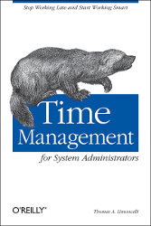

Time Management for System Administrators
Posted on Tue 11 September 2018 in books • 5 min read

After 4 years I finally made enough time to finish reading this book.
Sounds Ironic, no? Just goes to show how bad I needed some proper Time Management.
By time I fully read it, I felt I had come up with some of the proposed techniques already throughout my (young) career myself, gained through experience.
Throughout the years, I’ve always embraced Continuous Improvement and managing your time well is nefarious to this concept.
So in this post, I will list my personal takeaways from the book - there might be much more in it to discover for yourself.
Although some proposed solutions may sound obvious for some people, I can’t recommend this book enough for System Adminstrators and even SysOps/SRE roles.
Whether you are just starting out your career or if you are facing issues managing your time properly.
Even these days with Agile and DevOps, some parts still make complete sense - or you can easily project it on the current times.
This is the first time I write a “book review”, but as you can see it will be more a summary of my personal notes.
It’s a list of things that the book covered which resonated for me, might be different for you.
I will go over chapter by chapter and list my personal takeaways for each of them.
Focus vs Interruption
- Have an immutable coworker.
- Dealing with interruptions:
- Delegate it: have someone else do it if you are in the middle of something
- Record it: Write it down (create a ticket), notify the person that a ticket is created (preferably while he is still next to you)
- Do it: If it is truly urgent, drop everything and just do it.
- Plan project stuff during peak focus time.
Routines
- Create Routines (weekly), fill up gas tank on sunday, walk-around the office on Mo & Thu, schedule a weekly chat with your boss …
- Always backup a file before editing
- Schedule reading time
“The Cycle System”
Daily to-do list with columns Done, Priority, Time, Item.
Only 3 priority levels: A (today), B (soon), C (everything else)
| Done | Priority | Time | Item |
|---|---|---|---|
| ✓ | A | 1h | Fix Jenkins build for product x |
| A | 1h | Deploy new webserver for product y | |
| B | 3h | Try out molecule on an Ansible role |
- Record all requests, every time. Use your brain for other stuff.
- Similarly, write down thoughts immediately to clear mind
- 10 minutes every morning to plan today’s todo list, before opening your mail!
- Block timeslot on high concentration and energy part of the day to do project work
- Items that were not done Yesterday, keep getting added to the list of Today until done (during daily review in the morning)
- Let people know you were not able to finish their request by the end of the day
- When new tasks get added during the day, add them to tomorrows schedule or reshuffle today (allow for 1h interruption time)
- 21 days needed to create a habit.
Life Goals
- To achieve your long-term goals, you need to know what they are and work toward them
- Goals should be measurable, they need a tangible result or measurement
- Goals should have deadines
- Review your life goals on a monthly basis with the following table:
| Professional | Personal | |
|---|---|---|
| 1 month | ||
| 1 year | ||
| 5 years |
- Add goals and steps to achieve such goal to the table, these “next steps” can then be sprinkled over your regular ToDo list.
- Schedule this “Life Goal Review” on the first monday of every month for example, dedicate time to it behind a closed door.
Add new ones and eliminate old ones.
Prioritization
- First task on list gets done first (oldest), no time wasted picking a task
- Based on customer expectation, blocking factor.
A small task that blocks a customer’s project will cost you the same amount of time to do it. The moment when you do it becomes important here. - For project: high-impact projects get priority over smaller non-impacting projects, they benefit you more than smaller easy projects
- Requests from boss get a higher priority, don’t be the reason he is delayed.
- “Manage your Boss”: Understand his goals, KPI’s and contribute to them
Stress Management
- Use vacation for decent breaks (save up for a 3-week break)
- Look into Yoga, meditation, massage (back muscles get tense from stress)
E-mail Management
- Go for a Clean Inbox
- Similar to “Delegate, Record, Do”:
- Filter
- Delete Unread
- Read and …
- Delete
- File
- Reply, then delete
- Delegate or forward, then delete
- Don’t re-read an e-mail! Once you start reading it, finish it and take one of the above actions.
- Don’t use your inbox/mail system as an organizer, you have your To Do list for that
Time-wasters
- A time waster is any activity that has low ratio of benefit to time spent. Rather than trying to do these activities more efficiently, it is better to try to eliminate them.
- Certain activities require to set an alarm so we are able to snap out of it before it eats all our time. (let me check this for 5 minutes … actually limit yourself and set an alarm)
- Differentiate between a work meeting vs status meeting, make it clear in the invite
- Start meetings on time, start with the most important items. Point latecomers to the minutes.
Documentation
- Internal and public repository, available through a web page.
- Create and link IT policies, only when available
- Also link to HR and Legal policies.
Automation
- Makefile on each server that does the actions you usually need to do there
- Before we can automate something, we need to have done it manually first to understand the full process, then document it step-by-step, then automate it
- Automate a task one step at a time and test in between (like crafting a oneliner)
- 4 kinds of tasks:
- Simple Things Done once
- Simple Things Done often
- Hard Things Done once
- Hard Things Done often
| Simple Things | Hard Things | |
|---|---|---|
| Done Once | Do it manually | Automate it |
| Done Often | Automate it | Buy or Write Software |
Some personal thoughts on the book
In this book, some information may come across as dated, “Using pen and paper or a PDA. What?”
But I highly recommend you sit it through and translate it to modern equivalents. Not that much has changed as it may seem.
For example, the Makefile per server sounds a bit old-fashioned in a world of containers, orchestrators and serverless.
With no SSH access a Makefile could still be interesting though.
Say you have different products and you need to scale up or scale down this products services. You could have a generic set of tasks per product that calls aws-cli, kubectl or ansible underneath, depending on what kind of stack it is running on.
You could also look at this book as a “GTD for sysadmins”, while somewhat true it still has it’s purpose and helps to relate to the mentioned problems and solutions thereof.
For better E-mail management, I think the tips are great as we get overloaded by mailing list messages, JIRA notifications, trello board updates …
I think I would go even further and restrict myself to do some inbox cleaning (reading mail) only once a day, say, after lunch.
E-mail is not that urgent usually - we have IM for that, which this book sadly does not cover :-).